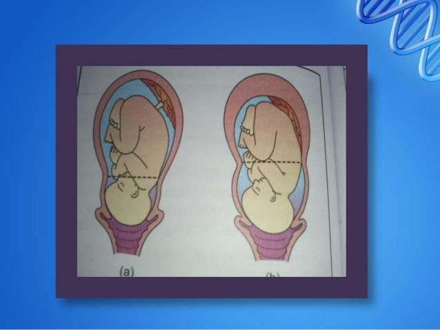
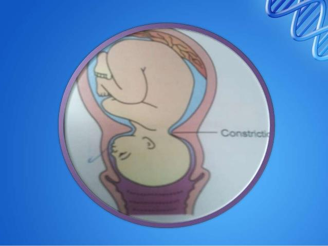
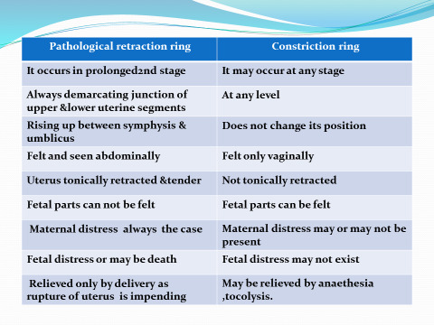

Disordered uterine contractions — inefficient, weak, inordinate, excessive, or incoordinate — that fail to cause progressive cervical dilatation and effacement. Abnormal uterine action is one of the 3 "P"s of dystocia (Power, Passages, Passenger) and encompasses the entire spectrum: precipitate labor, hypotonic uterine inertia, hypertonic inertia, pathological retraction (Bandl's) ring, constriction (contraction) ring, and cervical dystocia. This chapter covers the characteristics of normal adequate uterine contraction, the tocodynamometry tracings used to assess it, the formal classification (coordinate vs incoordinate), and the clinical features + management of each form of abnormal uterine action.
To understand the meaning and characteristics of normal adequate uterine contraction and its evaluation.
To be able to outline the classification of abnormal uterine action.
To be able to describe the clinical features and management of various forms of abnormal uterine action and its possible associated complications.
2Introduction · The 3 "P"s of dystocia
What is abnormal uterine action?
Inefficient, weak and / or inordinate uterine contractions which fail to cause progressive cervical dilatation and effacement.
📘 KEY CONCEPT · The 3 "P"s of difficult labor (dystocia)
Abnormal uterine action is one of the 3 "P"s that contribute to difficult labor (dystocia):
Power — the uterine contractions (this chapter).
Passages — the maternal bony pelvis + soft tissues.
Passenger — the fetus (size, lie, presentation, position).
Whenever labor fails to progress, all three Ps must be evaluated systematically before attributing the dystocia to the "Power" alone.
3Characteristics of normal adequate uterine contraction
A "normal adequate" uterine contraction has a reproducible quantitative profile. The four measurable parameters are frequency, duration, amplitude, and basal tone.
Frequency
One in 3 minutes.
Duration
Lasts for 45 seconds.
Amplitude
Efficient contraction reaches to 60 mmHg.
Basal tone (at relaxation)
In the range of 5–20 mmHg.
💡 MEMORY ANCHOR · The "3·45·60" rule of an adequate contraction
Frequency 1 in 3 min · Duration 45 sec · Amplitude 60 mmHg · Basal tone 5–20 mmHg. Any contraction that deviates significantly from this profile on a tocograph is, by definition, abnormal uterine action — and the first branch of the classification (§8) tells you which kind.
📝 Question 1 of 5
A normal adequate uterine contraction has the following characteristics:
The '3·45·60' rule: Frequency 1 in 3 min, Duration 45 sec, Amplitude 60 mmHg, with basal tone 5-20 mmHg.
📝 Question 2 of 5
The normal basal tone of uterine muscle at relaxation during labor is:
Normal basal tone at relaxation is in the range of 5-20 mmHg. Elevated basal tone >20 mmHg is defined as hypertonic uterine contraction.
📝 Question 3 of 5
In obstetric practice, this knowledge helps:
Comprehensive knowledge enables prevention, early diagnosis, and optimal management.
📝 Question 4 of 5
When assessing this aspect, the most important factor is:
Assessment requires integration of clinical, laboratory, and imaging findings.
📝 Question 5 of 5
Which of the following is a key concept?
Understanding key concepts is fundamental to clinical management.
4Assessment of uterine contraction
Uterine contractions can be quantified by two complementary methods — external (non-invasive, belts) and internal (invasive, catheter).
External tocodynanmometry
Utilizing external pressure transducer (External toco) — a strain-gauge belt strapped to the maternal abdomen. Non-invasive; gives frequency and rough duration but absolute pressure values are unreliable (depends on belt tension and abdominal wall thickness).
Internal tocodynamometry
Using an intrauterine pressure catheter (IUPC) inserted through the cervix into the amniotic cavity (after membrane rupture). The gold standard — gives true pressure in mmHg for amplitude and baseline tone.
📝 Question 1 of 5
Which method is the gold standard for measuring true intrauterine pressure in mmHg?
Internal tocodynamometry using an intrauterine pressure catheter (IUPC) is the gold standard, giving true pressure in mmHg. External toco gives frequency and rough duration but unreliable absolute pressure.
📝 Question 2 of 5
When assessing this aspect, the most important factor is:
Assessment requires integration of clinical, laboratory, and imaging findings.
📝 Question 3 of 5
The clinical significance of this section is:
Understanding these concepts directly informs clinical management.
📝 Question 4 of 5
Which of the following is a key concept?
Understanding key concepts is fundamental to clinical management.
📝 Question 5 of 5
In obstetric practice, this knowledge helps:
Comprehensive knowledge enables prevention, early diagnosis, and optimal management.
5Figure 1 · External toco dynamometry tracing paper
A representative external toco tracing showing the two parallel paper-strip outputs of every modern cardiotocograph (CTG): the upper FHR strip and the lower contraction (toco) strip. Three contraction peaks labelled "Beginning · Peak · End" are visible; the source's caption notes that contractions are measured peak-to-peak and are occurring every 2–3 minutes in this sample — consistent with active labor.
Source Image · img-000
Figure 1 — External toco dynamometry tracing paper. The upper strip is the fetal heart rate (FHR) tracing (left scale 30–240 bpm; right mirrored scale; baseline 120–150 bpm highlighted in cyan as the normal FHR band). The lower strip is the external toco tracing (left scale 0–100 mmHg; right alternate 0–12 units) with three contraction peaks and a blue speech-bubble annotation: "Contractions can be measured from peak-to-peak. Here, contractions are every 2–3 mins." Three red arrows label the landmarks of a single contraction — Beginning (rise from baseline), Peak (maximum amplitude), and End (return to baseline). The "INOP" marker is a typical artifact when the external transducer slips or loses contact.
6Clinical definitions of excessive uterine action
Four formal terms describe the upper end of the abnormal-uterine-action spectrum. They are not synonyms — each has its own trigger criteria and clinical implication.
Term
Definition (verbatim from source)
Uterine tachysystole
4 or more contractions in 10 minutes.
Uterine hyperstimulation
As in tachysystole but when the uterine action abnormality occurs in response to oxytocin and in presence of fetal heart rate (FHR) abnormality.
Tetanic uterine contraction
Single contraction sustained for > 3 minutes.
Hypertonic uterine contraction
Elevated basal tone > 20 mmHg.
💡 CLINICAL PEARL · Tachysystole vs hyperstimulation
Tachysystole = > 5 contractions in 10 min, averaged over 30 min (formal ACOG definition). Hyperstimulation = the same excessive activity, but specifically triggered by oxytocinand accompanied by an FHR abnormality — which makes it a clinical emergency requiring immediate action (§7). Memorize the difference: tachysystole = the number; hyperstimulation = the number PLUS the cause (oxytocin) PLUS the consequence (FHR abnormality).
📝 Question 1 of 5
Uterine tachysystole is defined as:
Uterine tachysystole is defined as 4 or more contractions in 10 minutes (ACOG: >5 in 10 min averaged over 30 min). Hyperstimulation = tachysystole + oxytocin + FHR abnormality.
📝 Question 2 of 5
A tetanic uterine contraction is defined as:
A tetanic uterine contraction is a single contraction sustained for more than 3 minutes.
📝 Question 3 of 5
Which of the following best defines this condition?
A definition describes the essential nature of a condition as a deviation from normal.
📝 Question 4 of 5
When assessing this aspect, the most important factor is:
Assessment requires integration of clinical, laboratory, and imaging findings.
📝 Question 5 of 5
In obstetric practice, this knowledge helps:
Comprehensive knowledge enables prevention, early diagnosis, and optimal management.
7First-aid measures for uterine overactivity
The source's clinical question: "What are the first aid measures you will take to manage any of the above-mentioned uterine overactivity?" The answer is a 5-step sequence.
Positioning of the patient into lateral position — relieves aortocaval compression and improves uteroplacental perfusion.
Oxygenation — supplemental O₂ to improve fetal oxygen delivery.
Discontinue oxytocin if infusion is ongoing — the most common reversible cause.
Administer a tocolytic — relaxes the myometrium (β-agonist, e.g. terbutaline, or MgSO₄).
Consider immediate delivery with persistently ominous FHR tracing.
🚨 DANGER · When step 5 becomes step 1
If the FHR tracing is persistently ominous (Category III) despite all four conservative measures, the next step is immediate delivery — not continued tocolysis. In the second stage, that means operative vaginal delivery (forceps / ventouse); in the first stage, it means emergency cesarean section. The tocolytic buys time, it does not replace delivery when the fetus is in jeopardy.
📝 Question 1 of 5
The first step in managing uterine overactivity is:
The 5-step sequence: 1) Lateral positioning, 2) Oxygenation, 3) Discontinue oxytocin, 4) Administer tocolytic, 5) Consider immediate delivery if persistently ominous FHR tracing.
📝 Question 2 of 5
Which of the following is a key concept?
Understanding key concepts is fundamental to clinical management.
📝 Question 3 of 5
In obstetric practice, this knowledge helps:
Comprehensive knowledge enables prevention, early diagnosis, and optimal management.
📝 Question 4 of 5
The clinical significance of this section is:
Understanding these concepts directly informs clinical management.
📝 Question 5 of 5
When assessing this aspect, the most important factor is:
Assessment requires integration of clinical, laboratory, and imaging findings.
8Classification of abnormal uterine action
The single most testable framework in this chapter. Abnormal uterine action divides into two great branches based on the polarity of the contraction — i.e. whether the normal fundal-dominant gradient of uterine activity is preserved (coordinate) or lost (incoordinate).
▣ Normal polarity (Coordinate)
Hypertonic — precipitate labor, in absence of obstructed labor.
Tonic contraction & retraction — (Bandl's or pathological retraction ring), in presence of obstructed labor.
Hypotonic — hypotonic inertia.
▣ Abnormal polarity (Incoordinate)
Spastic (hypertonic) lower segment.
Colicky uterus.
Constriction ring.
Generalized tonic contraction.
Cervical dystocia.
💡 MEMORY ANCHOR · Coordinate vs Incoordinate in one line
Coordinate = the fundus still leads — the contraction wave starts at the fundus and propagates downward correctly (precipitate, Bandl's, hypotonic inertia are all variants of preserved polarity). Incoordinate = the fundal dominance is lost — the lower segment or a localized ring contracts more than the fundus, producing the spastic / colicky / constriction / tonic / cervical-dystocia cluster.
📝 Question 1 of 5
In coordinate (normal polarity) abnormal uterine action, the fundal dominance is:
In coordinate abnormal uterine action, the fundal dominance is preserved — the contraction wave still starts at the fundus. Examples: precipitate labor, Bandl's ring, hypotonic inertia.
📝 Question 2 of 5
Which of the following is an incoordinate (abnormal polarity) uterine action?
Constriction ring is an incoordinate uterine action where fundal dominance is lost. Others (precipitate labor, Bandl's, hypotonic inertia) are coordinate types.
📝 Question 3 of 5
In obstetric practice, this knowledge helps:
Comprehensive knowledge enables prevention, early diagnosis, and optimal management.
📝 Question 4 of 5
The clinical significance of this section is:
Understanding these concepts directly informs clinical management.
📝 Question 5 of 5
Which of the following is a key concept?
Understanding key concepts is fundamental to clinical management.
9Precipitate labor
Definition
A labor lasting less than 3 hours.
Etiology
It is more common in multiparas when there are:
Strong uterine contractions.
Small sized baby.
Roomy pelvis.
Complications
Maternal (6)
Lacerations of the cervix, vagina and perineum.
Placental abruption.
Shock.
Inversion of the uterus.
Postpartum hemorrhage: (no time for retraction).
Sepsis due to lacerations and unsuitable circumstances.
Fetal (4)
Intracranial hemorrhage due to sudden compression and decompression of the head.
Fetal asphyxia due to strong frequent uterine contractions reducing placental perfusion.
Avulsion of the umbilical cord.
Fetal injury due to falling down.
Management
Before delivery
Patient who had previous precipitate labor should be hospitalized before expected date of delivery as she is more prone to repeated precipitate labor.
During delivery
Tocolytic agents — β agonists (terbutaline) may be effective.
Inhalation anesthesia — as nitrous oxide and oxygen is given to slow the course of labor.
Episiotomy — to avoid perineal lacerations.
After delivery
Proper examination of the genital system and fetus for any injuries.
📝 Question 1 of 5
Precipitate labor is defined as labor lasting less than:
Precipitate labor lasts less than 3 hours. It is more common in multiparas with strong contractions, small baby, and roomy pelvis.
📝 Question 2 of 5
Which is a fetal complication of precipitate labor?
Fetal complications include intracranial hemorrhage (from sudden compression/decompression), fetal asphyxia, cord avulsion, and fetal injury. Maternal complications include lacerations, abruption, shock, inversion, PPH, and sepsis.
📝 Question 3 of 5
When assessing this aspect, the most important factor is:
Assessment requires integration of clinical, laboratory, and imaging findings.
📝 Question 4 of 5
The clinical significance of this section is:
Understanding these concepts directly informs clinical management.
📝 Question 5 of 5
In obstetric practice, this knowledge helps:
Comprehensive knowledge enables prevention, early diagnosis, and optimal management.
10Pathological retraction ring (Bandl's ring)
Physiological retraction ring
Definition
It is a line of demarcation between the upper and lower uterine segment present during normal labor and cannot usually be felt abdominally.
Pathological retraction ring (Bandl's ring)
Definition
It is the rising up like a groove between symphysis and umbilicus during obstructed labor due to marked retraction and thickening of the upper uterine segment while the relatively passive lower segment is markedly stretched and thinned to accommodate the fetus.
🚨 DANGER · Impending uterine rupture
Clinical picture: obstructed labor with impending rupture uterus. Obstructed labor should be immediately treated, otherwise the thinned lower uterine segment will rupture. Bandl's ring is the visual landmark that the lower segment is at the breaking point — it is an obstetric emergency, not a finding to be observed.
📝 Question 1 of 5
Bandl's (pathological retraction) ring is a sign of:
Bandl's ring is a sign of obstructed labor with impending uterine rupture. The upper segment retracts and thickens while the lower segment is markedly stretched and thinned.
📝 Question 2 of 5
Pathological retraction ring can be detected by:
Bandl's ring is visible abdominally and palpable as a transverse groove rising between symphysis and umbilicus — in contrast to constriction ring which is felt only vaginally.
📝 Question 3 of 5
In obstetric practice, this knowledge helps:
Comprehensive knowledge enables prevention, early diagnosis, and optimal management.
📝 Question 4 of 5
When assessing this aspect, the most important factor is:
Assessment requires integration of clinical, laboratory, and imaging findings.
📝 Question 5 of 5
Which of the following is a key concept?
Understanding key concepts is fundamental to clinical management.
11Figures 2 + 3 · Physiological vs Pathological retraction ring
The source pairs a schematic diagram (Figure 2) with a clinical photograph (Figure 3) to drive home the same message: a pathological retraction ring is something you can see and feel on the maternal abdomen, rising between the symphysis pubis and the umbilicus as a transverse groove.
Source Image · img-001

Figure 2 — Retraction rings: physiological vs pathological. Two side-by-side sagittal diagrams of a pregnant uterus with fetus in utero. (a) Physiological retraction ring — an imaginary line of demarcation between the thick upper segment and the thinner lower segment. The dashed horizontal reference line is unchanged. (b) Pathological retraction ring — the upper segment has markedly retracted and thickened (drawn with a thicker pink muscular wall), and the lower segment has stretched and thinned (drawn elongated downward). The dashed reference line now shows that the fetus has been pushed lower and the cavity has been compressed. The DNA-helix decoration in the upper right corner of the source page identifies the textbook's visual brand.
Source Image · img-002
Figure 3 — Clinical appearance of the pathological retraction ring on the maternal abdomen. A late-pregnancy clinical photograph showing the rounded gravid abdomen with the linea nigra visible. The source's caption: "Obstructed labor and a pathological retraction ring shown as an abdominal groove moving transversely between the symphysis and umbilicus that can be seen and felt." The image is paired with Figure 2's schematic so the student can correlate the anatomical concept (Figure 2) with the bedside finding (Figure 3) — the hallmark of a Bandl's ring is that it is visible abdominally and palpable as a transverse groove rising toward the umbilicus, in contrast to a constriction ring (§13) which is felt only vaginally.
💡 CLINICAL PEARL · Why "rings" are easy to confuse
Two completely different rings share the same word. Pathological retraction ring (Bandl's) = global, at the junction of upper and lower segments, rising upward, seen and felt abdominally, and a sign of impending rupture. Constriction ring = localized, can be at any level, does not change position, felt only vaginally, and may be relaxed by anesthesia. The differences are tabulated explicitly in §13 Figure 4.
📝 Question 1 of 5
Which of the following is a key concept?
Understanding key concepts is fundamental to clinical management.
📝 Question 2 of 5
When assessing this aspect, the most important factor is:
Assessment requires integration of clinical, laboratory, and imaging findings.
📝 Question 3 of 5
In obstetric practice, this knowledge helps:
Comprehensive knowledge enables prevention, early diagnosis, and optimal management.
📝 Question 4 of 5
The clinical significance of this section is:
Understanding these concepts directly informs clinical management.
📝 Question 5 of 5
Which of the following is a key concept?
Understanding key concepts is fundamental to clinical management.
12Uterine inertia · Hypotonic inertia
Definition
Infrequent weak uterine contractions.
Etiology
Unknown but the following factors may be predisposing factors:
General factors
Primigravida particularly elderly.
Anemia (including cases with antepartum hemorrhage).
Hypertensive disorders with pregnancy.
Nervous and emotional states as anxiety and fear.
Induced labor.
Improper use of analgesics.
Local factors
Myomas of the uterus interfering mechanically with contractions.
Malpresentations, malpositions and cephalopelvic disproportion. The presenting part is not fitting in the lower uterine segment leading to absence of reflex uterine contractions.
Overdistension of the uterus (twins & polyhydramnios).
Full bladder and rectum.
Developmental anomalies of the uterus e.g. bicornuate and didelphic uterus.
Clinical picture
Prolonged labor.
Intact membranes.
The fetus and mother are usually not affected apart from maternal anxiety due to prolonged labor.
More susceptibility for retained placenta and postpartum hemorrhage due to persistent inertia.
Slow cervical dilatation.
Infrequent and weak uterine contractions.
Complications
Prolonged second stage with frequent use of instrumental delivery or CS.
Maternal exhaustion.
Retained placenta and postpartum hemorrhage caused by atony.
Fetal infection as result of prolonged rupture of membranes.
Management
General measures
Good obstetric examination to detect disproportion, malpresentation or malposition and proper management.
Proper management of the first stage (encourage maternal ambulation and hydration and appropriate analgesia).
If the membranes are ruptured give prophylactic antibiotics.
Local measures
1) Do Amniotomy (artificial rupture of membranes) if:
The cervical dilatation is more than 3 cm.
The presenting part is engaged.
Artificial rupture of membranes augments the uterine contractions by:
Releasing prostaglandins.
Reflex stimulation of uterine contractions.
Oxytocin augmentation
Exclude contraindications to oxytocin (cephalopelvic disproportion, malpresentation, scarred uterus, grand multipara).
Use automated infusion pump for oxytocin infusion for better control of the dosage.
Close fetal cardiotochographic (CTG) monitoring.
Start at 2 miu/min then incrementally increase until an efficient uterine contraction is achieved (3 contractions in 10 minutes).
Delivery — Vaginal
Vaginal delivery with instrumental aid (forceps or ventouse), if cervix is fully dilated and head engaged.
Delivery — Cesarean Section
In cases:
Failure of above measures.
Contraindications to oxytocin.
Non reassuring CTG and cervix incompletely dilated.
📝 Question 1 of 5
Hypotonic uterine inertia is characterized by:
Hypotonic inertia features infrequent weak uterine contractions with slow cervical dilatation. Management includes amniotomy and oxytocin augmentation after excluding CPD.
📝 Question 2 of 5
Which is a contraindication to oxytocin augmentation?
Contraindications to oxytocin include cephalopelvic disproportion, malpresentation, scarred uterus, and grand multipara.
📝 Question 3 of 5
The clinical significance of this section is:
Understanding these concepts directly informs clinical management.
📝 Question 4 of 5
When assessing this aspect, the most important factor is:
Assessment requires integration of clinical, laboratory, and imaging findings.
📝 Question 5 of 5
In obstetric practice, this knowledge helps:
Comprehensive knowledge enables prevention, early diagnosis, and optimal management.
13Constriction (contraction) ring + Figure 4 + Comparison table
Definition
Persistent localized annular spasm of the circular muscles of the uterus. It occurs at any part of the uterus but usually at junction of the upper and lower uterine segments. It can occur at the 1st, 2nd or 3rd stage of labor.
Etiology
Unknown but the predisposing factors are:
Malpresentations and malpositions.
PROM & oligohydramnios.
Premature attempts at instrumental delivery.
Improper use of oxytocin (in hypertonic inertia or overdosing).
Diagnosis
The condition is frequently preceded by colicky uterus.
More common in primigravida.
The ring can be felt vaginally.
Complications
In 1st & 2nd stages: it causes prolonged labor, it may encircle the fetal neck.
In 3rd stage: retained placenta and postpartum hemorrhage.
Management
Malpresentations, malposition and disproportion should be excluded.
In the 1st stage: give Pethidine.
In the 2nd stage: a tocolytic or general anesthesia may relax the constriction ring:
If the ring is relaxed → forceps delivery.
If the ring does not relax → cesarean section.
In the 3rd stage: manual removal of the placenta under deep general anesthesia.
Figure 4 · The constriction ring
Source Image · img-003

Figure 4 — The constriction ring. A circular (round-frame) textbook illustration depicting a sagittal cross-section of a pregnant uterus in labor. A fetus is shown in cephalic (head-down) presentation with the placenta visible at the fundus. The label "Constrictio[n]" (cut off in the source) points to a localized annular narrowing in the lower uterine segment wall — a spastic contraction of the circular myometrium gripping the fetus. The DNA-helix graphic in the upper-right corner is the publisher's decorative branding. The visual reinforces the source's key teaching point: a constriction ring is localized and at any level — in contrast to a pathological retraction (Bandl's) ring, which is at the junction of upper and lower segments and rises upward with obstructed labor.
Comparison table · Pathological retraction vs Constriction ring
Source Image · img-004 · Comparison Table

Figure 5 — Differences between pathological retraction and constriction rings. A side-by-side two-column comparison table that distills the 8 clinical discriminators between the two rings. Pathological retraction ring (left): occurs in prolonged 2nd stage · always at the junction of upper & lower segments · rising up between symphysis & umbilicus · felt and seen abdominally · uterus tonically retracted & tender · fetal parts cannot be felt · maternal distress always present · fetal distress or may be death · relieved only by delivery as rupture of uterus is impending. Constriction ring (right): may occur at any stage · at any level · does not change its position · felt only vaginally · uterus not tonically retracted · fetal parts can be felt · maternal distress may or may not be present · fetal distress may not exist · may be relieved by anaesthesia or tocolysis. The key bedside discriminator: palpable abdominally = Bandl's; palpable only vaginally = Constriction.
📝 Question 1 of 5
A key difference between pathological retraction ring and constriction ring is:
Bandl's ring is palpable abdominally as a rising transverse groove. Constriction ring is felt only vaginally and does not change position. This is the key bedside discriminator.
📝 Question 2 of 5
Which of the following is a key concept?
Understanding key concepts is fundamental to clinical management.
📝 Question 3 of 5
In obstetric practice, this knowledge helps:
Comprehensive knowledge enables prevention, early diagnosis, and optimal management.
📝 Question 4 of 5
When assessing this aspect, the most important factor is:
Assessment requires integration of clinical, laboratory, and imaging findings.
📝 Question 5 of 5
The clinical significance of this section is:
Understanding these concepts directly informs clinical management.
14Hypertonic inertia & Cervical dystocia
Hypertonic inertia — Definition
It represents a case of reversed polarity where the fundal dominance is lacking.
Types
1) Spastic lower uterine segment: which normally should be dilated and lax in presence of weak uterine contractions.
2) Colicky uterus: where there is weak incoordinate contractions of the uterus.
Clinical picture
The condition is more common in primigravida and characterized by:
Patient in agony with signs of dehydration & ketosis.
Irregular and painful uterine contractions. No relaxation in between.
Slow cervical dilatation.
Premature rupture of membranes.
Labor is prolonged.
Fetal and maternal distress.
Management
General measures: as hypotonic inertia.
Obstetric measures:
Obstetric analgesia: pethidine or epidural analgesia.
Cesarean section is indicated in:
Cephalopelvic disproportion.
Fetal distress before full cervical dilatation.
Cervical dystocia
Definition
Failure of the cervix to dilate within a reasonable time in presence of good regular uterine contractions.
Types
Functional (primary)
The external os fails to dilate in spite of absence of any organic lesion. It is due to lack of softening of the cervix during pregnancy.
Organic (secondary)
Cervical stenosis due to previous operations in the cervix.
Organic lesions as cervical myoma.
Complications
Rupture uterus.
Postpartum hemorrhage: due to cervical tear.
Management
Analgesics or antispasmodics.
Cesarean section is mostly required in case of cervical dystocia.
15Student activity · Questions · References
🎓 Student activity click to expand
An illustrative diagram of various forms of abnormal uterine actions, its features and management is requested from each students' group with the aid of the tutor of bedside part of the clinical round.
Suggested group task: produce a single A3 poster that covers (1) the coordinate vs incoordinate classification tree, (2) the four "excessive uterine action" terms with quantitative cutoffs, (3) the first-aid 5-step ladder, and (4) the 8-feature comparison between Bandl's ring and the constriction ring (Figure 5). The poster should be defended in 5 minutes per group during the next bedside round.
📝 Self-assessment Questions (Google Form) click to expand
Test your understanding of abnormal uterine action via the chapter's official Google Form:
The Google Form covers ILO-aligned MCQs on: the 3 P's of dystocia; the 3·45·60 rule of an adequate contraction; the 4 definitions of excessive uterine action (tachysystole, hyperstimulation, tetanic, hypertonic); the 5-step first-aid ladder; the coordinate vs incoordinate classification; the clinical picture of precipitate labor; Bandl's ring (definition, mechanism, danger); the comparison between pathological retraction and constriction rings (Figure 5); the etiology and management of uterine inertia; and the definition of cervical dystocia.
📚 References & Visual Sources click to expand
Source material
Primary text:Book Obstetrics 2025-2026, Chapter 33 "Abnormal Uterine Action", p. 169-179 (11 pages). All clinical content in this infographic is preserved verbatim from this source.
Figure 1 — External toco dynamometry tracing paper (p. 170) — teaching diagram of an external toco strip with three contraction peaks labelled "Beginning · Peak · End" and a speech-bubble annotation: "Contractions can be measured from peak-to-peak. Here, contractions are every 2-3 mins."
Figure 2 — Retraction rings: (a) Physiological vs (b) Pathological (p. 173) — two side-by-side sagittal diagrams of a fetus in utero showing the imaginary normal ring vs the thickening-upper / thinning-lower pattern of Bandl's ring.
Figure 3 — Clinical appearance of the pathological retraction ring on the maternal abdomen (p. 173) — late-pregnancy clinical photograph of a gravid abdomen with the source's caption explaining the visible transverse groove between symphysis and umbilicus.
Figure 4 — The constriction ring (p. 177) — circular textbook illustration of a pregnant uterus in labor with a labelled "Constrictio[n]" pointing to a localized annular narrowing in the lower segment wall.
Figure 5 — Differences between pathological retraction and constriction rings (p. 177) — two-column comparison table across 8 clinical features (stage, location, position, detection, uterine state, fetal parts, maternal condition, fetal condition, relief method).
External visuals
None — all visuals in this infographic are extracted from the source PDF (Book Obstetrics 2025-2026-033.pdf) and are framed in green .src-viz cards. No external websites, no third-party images.
Source-text preservation notes
Source spelling "tocodynanmometry" (with an extra "n") preserved verbatim in §4 — corrected form "tocodynamometry" used in §5 image caption for reader clarity, with original form documented here for transparency.
Source phrasing "Strong uterine contractions. Small sized baby. Roomy pelvis." preserved verbatim as separate bullet items in §9 Etiology of precipitate labor.
Source heading "Constriction (contraction) ring" preserved verbatim as the §13 section title; the parenthetical "(contraction)" documents that the two terms are used interchangeably in the source.
Source heading "Uterine inertia" preserved verbatim; §12 sub-title "Hypotonic inertia" is added as a clarifying gloss because the source's inertia content exclusively describes the hypotonic variant (hypertonic inertia is treated separately in §14).
Source typo "tocolynanmometry" patterns preserved as they appear in the original — see §4 "External tocodynanmometry".
All drug names and clinical cutoffs preserved verbatim: terbutaline, nitrous oxide and oxygen, pethidine, oxytocin 2 miu/min, 3 contractions in 10 minutes, 45 sec, 60 mmHg, 5-20 mmHg, > 3 min, > 20 mmHg, 4+ in 10 min, < 3 hours, cervical dilatation > 3 cm.